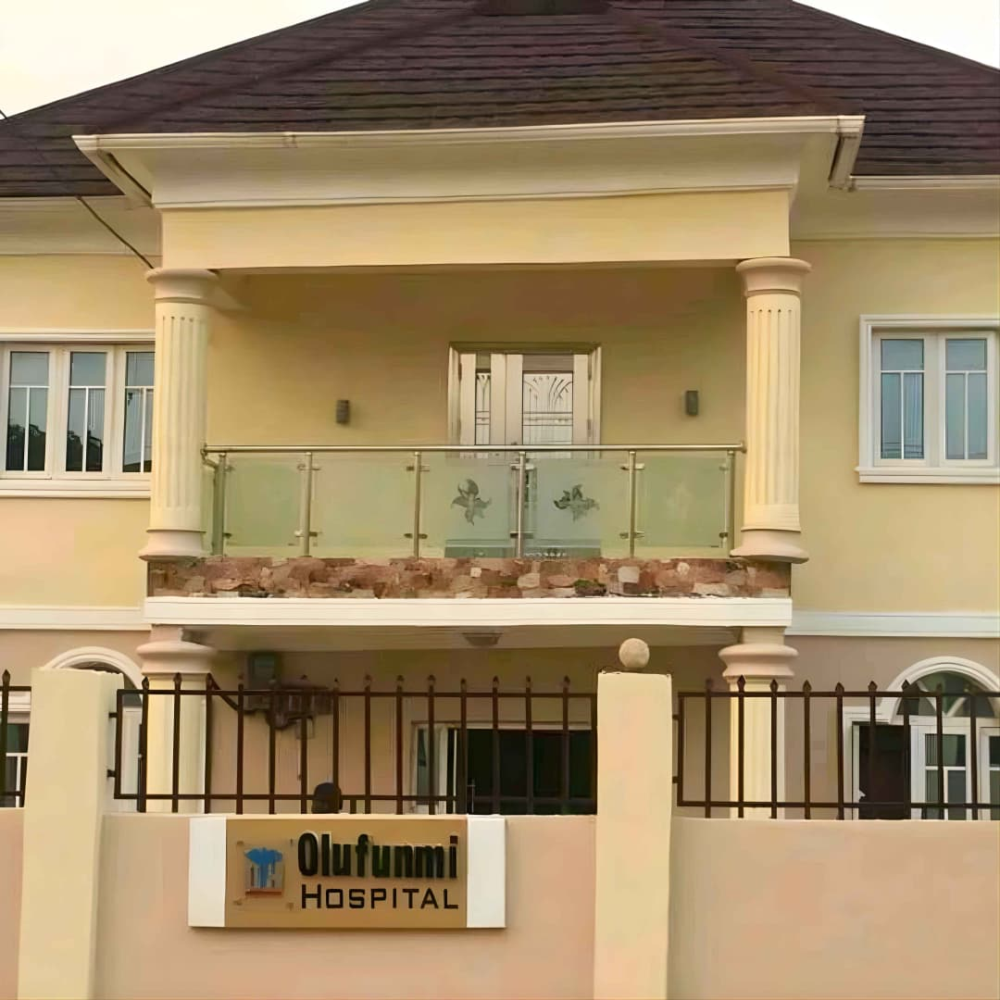

About Olufunmi
Specialist Hospital
Established on October 4, 2010, we have spent over 15 years providing round-the-clock, high-quality specialist healthcare in Abeokuta.
Brief History of Olufunmi Specialist Hospital
Olufunmi Specialist Hospital was established on October 4, 2010, as a world-class and reputable health facility in Abeokuta. From our base in Asero Estate, we provide round-the-clock, high-quality, patient-focused, easily accessible, and cost-effective healthcare for individuals and corporate organisations.
With over 15 years of service, our professionalism, efficiency, tactfulness, and prompt delivery—supported by a serene and neat environment—have earned us a reputation for excellence among public and private organisations.
We have consistently maintained the trust and confidence of our clients by delivering dependable healthcare services that meet evolving community needs.

15 Years of Progress
Hospital Founded
Olufunmi Specialist Hospital opens at Asero Estate, Abeokuta on October 4, 2010, launching patient-focused specialist care with strong standards in quality and access.
Expansion into Specialist Departments
The hospital expands its clinical scope with dedicated specialist departments: surgery, paediatrics, and diagnostic laboratory services. Investment in modern equipment significantly upgrades diagnostic capacity.
Facility Upgrade & Accreditation
Major facility renovation and equipment upgrade programme completed. The hospital achieves key accreditation milestones, reinforcing its position as a trusted specialist centre in Ogun State.
10,000 Patients Served
Olufunmi Specialist Hospital celebrates the milestone of serving 10,000 patients, a testament to the trust the Abeokuta community has placed in our care. The hospital continues to grow through word-of-mouth recommendation.
Deepening Community Impact
Olufunmi Specialist Hospital continues to strengthen specialist services, diagnostics, and patient experience while sustaining the confidence of individuals, organisations, and communities within and outside Abeokuta.
Mission, Vision & Mandate
Our Mission
To provide accessible, affordable, and standardised care for people within and outside our community.
Our Vision
To remain a trusted specialist hospital known for high-quality, patient-focused care, professional excellence, and dependable service delivery.
Our Values
Professionalism, efficiency, tactfulness, compassion, integrity, and prompt delivery in a serene and respectful care environment.
Accreditation & Affiliations
Olufunmi Specialist Hospital Ltd. is a registered specialist hospital in Ogun State, operating under the regulatory framework of the Nigerian Federal Ministry of Health and the Ogun State Ministry of Health. Our clinical practices conform to national and international standards for patient safety, infection control, and quality of care.
Our Hospital in Pictures
Click any image to view in full size.